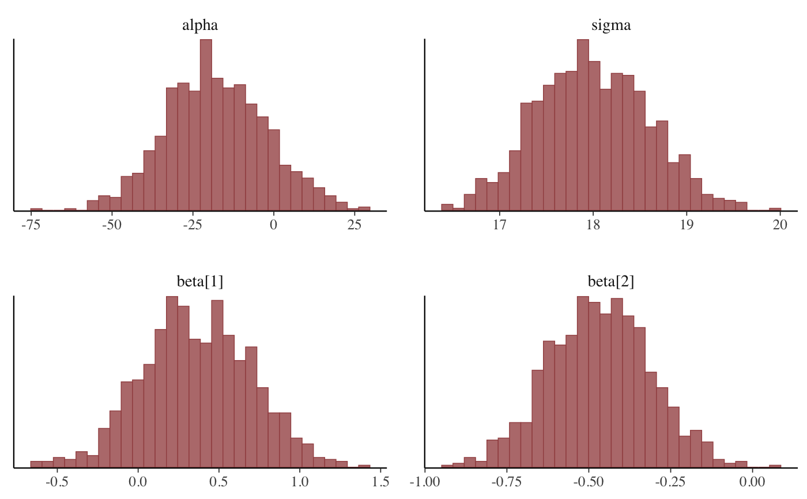
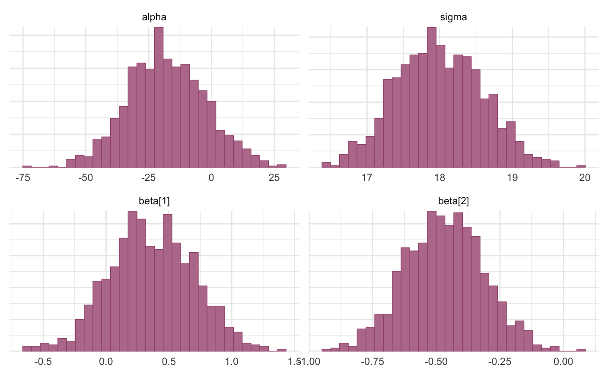
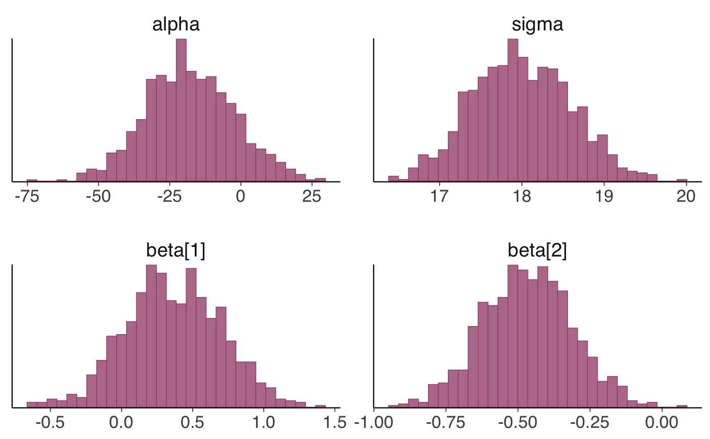
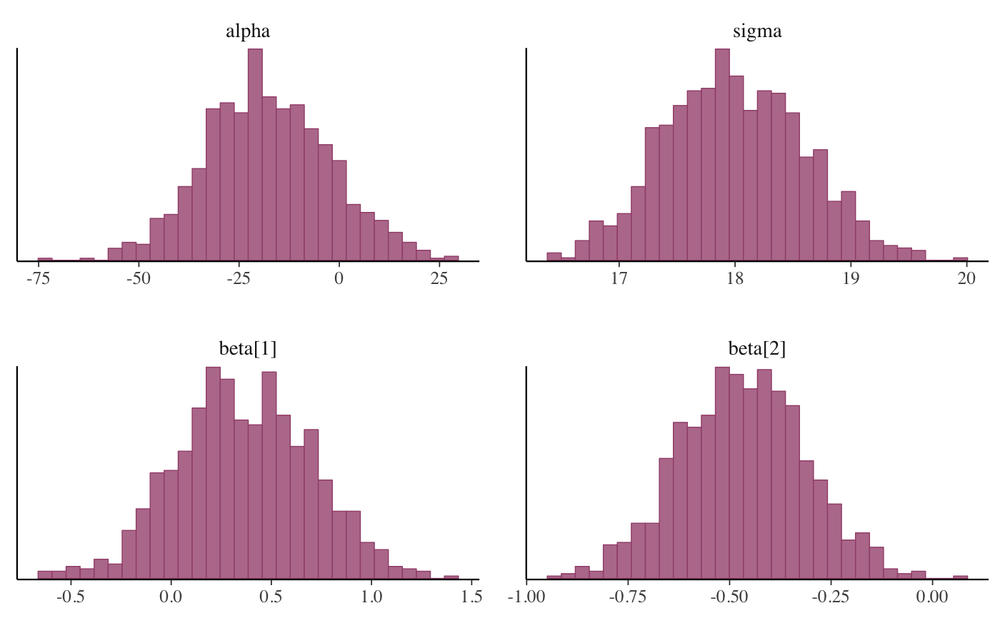
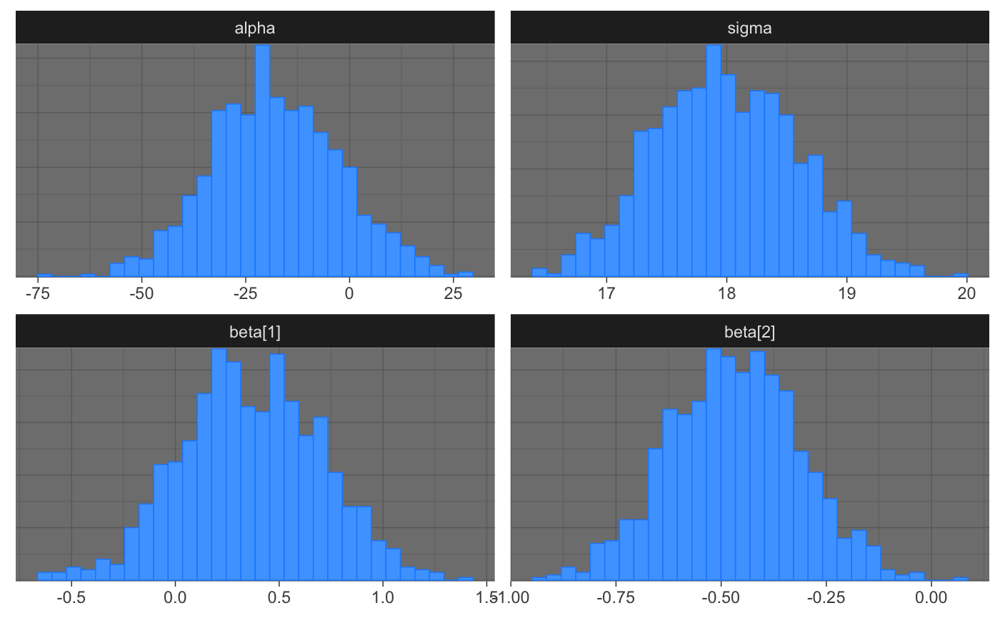
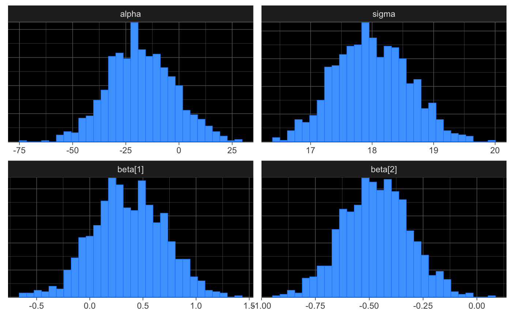

Get, set, and modify the active bayesplot theme
bayesplot_theme_get.RdThese functions are the bayesplot equivalent to
ggplot2's theme_set and friends. They set,
get, and update the active theme but only apply them to bayesplots.
The current/active theme is automatically applied to every bayesplot
you draw.
Use bayesplot_theme_get to get the current bayesplot theme,
and bayesplot_theme_set to change it. bayesplot_theme_update
and bayesplot_theme_replace are shorthands for changing individual
elements.
bayesplot_theme_get() bayesplot_theme_set(new = theme_default()) bayesplot_theme_update(...) bayesplot_theme_replace(...)
Arguments
| new | The new theme (list of theme elements) to use. This is analogous
to the |
|---|---|
| ... | A named list of theme settings. |
Value
bayesplot_theme_get returns the current theme. The other three
functions (set, update, replace) invisibly return the previous theme
so it can be saved and easily restored later. This is the same behavior as
the ggplot2 versions of these functions.
Details
bayesplot_theme_set and friends only apply to
bayesplots. However, ggplot2::theme_set can also be used to
change the bayesplot theme. Currently, setting a theme with
ggplot2::theme_set (other than the ggplot2 default
theme_grey) will override the bayesplot theme.
See also
theme_default for the default bayesplot theme.
bayesplot-helpers for a variety of convenience functions, many of which provide shortcuts for tweaking theme elements after creating a plot.
bayesplot-colors to set or view the color scheme used
for plotting.
Examples
library(ggplot2) # plot using the current value of bayesplot_theme_get() # (the default is bayesplot::theme_default()) x <- example_mcmc_draws() mcmc_hist(x)#># change the bayesplot theme to theme_minimal and save the old theme old <- bayesplot_theme_set(theme_minimal()) mcmc_hist(x)#>#># change the default font size and family for bayesplots bayesplot_theme_update(text = element_text(size = 16, family = "sans")) mcmc_hist(x)#># change back to the default bayesplot_theme_set() # same as bayesplot_theme_set(theme_default()) mcmc_hist(x)#># updating theme elements color_scheme_set("brightblue") bayesplot_theme_set(theme_dark()) mcmc_hist(x)#>#># to get the same plot without updating the theme we could also have # used the bayeplot convenience function panel_bg() bayesplot_theme_set(theme_dark()) mcmc_hist(x) + panel_bg(fill = "black")#>